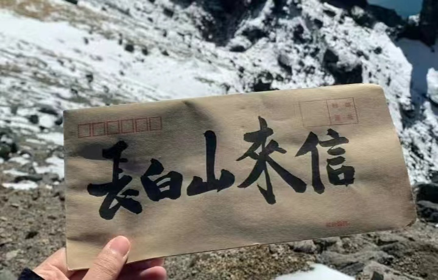

长白山简介 

长白山是欧亚大陆东缘的最高山系,地处吉林省东南部,位邻中国与朝鲜边界。因其主峰多白色浮石和积雪而得名,以其丰饶广袤、博大深厚、独特多样、悠久厚重的自然资源和人文积淀而驰名天下。长白山保护区总面积19.64万公顷,核心区7.58万公顷,长白山系的最高峰是朝鲜境内的白头峰,海拔2,749米。中国境内最高峰白云峰,海拔2,691米,是中国东北的最高峰。长白山植被垂直景观及火山地貌景观是首批进入《中国国家自然遗产、国家自然与文化双遗产预备名录》的国家自然遗产地。曾先后被确定为首批国家级自然保护区、首批国家5A级旅游景区、联合国教科文组织"人与生物圈计划"自然保留地和世界自然保护联盟评定的国际A级自然保护区。长白山及其天池、瀑布、雪雕、林海等等,曾多次入选“吉尼斯”世界之最记录,更有中华十大名山、中国最美的五大湖泊、中国最美的十大森林等等的美誉。长白山在生态、生物、地质和历史等诸多方面都具有突出的普遍价值和卓越的自然品质以及丰富的文化内涵。